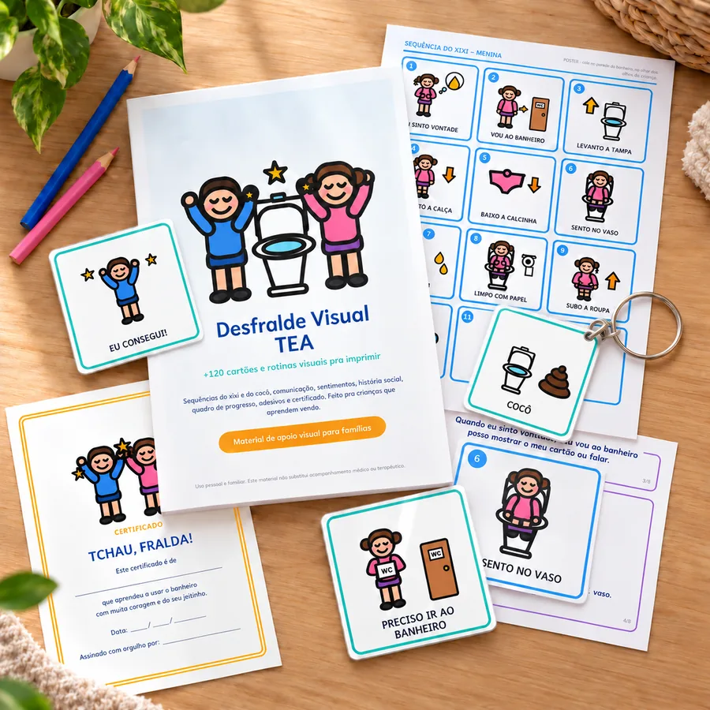
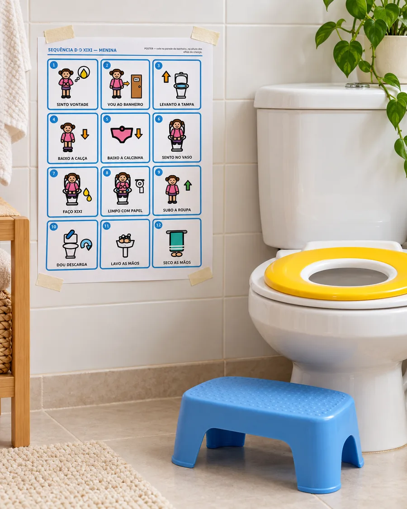
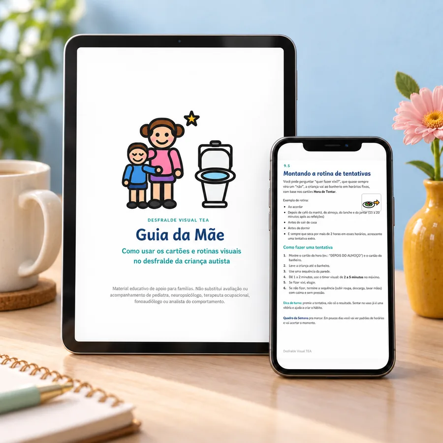
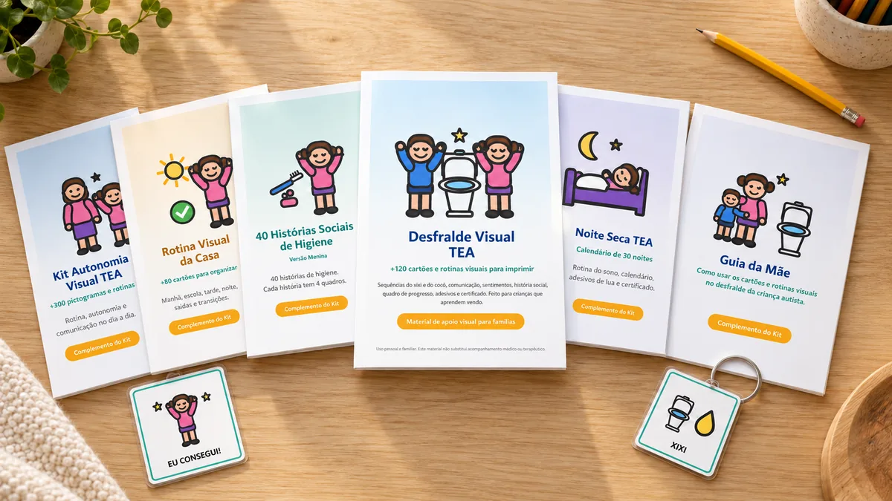

Imprima hoje, cole no banheiro e deixe seu filho ver cada passo do xixi e do cocô, no ritmo dele e sem pressão.

QUERO O KIT POR R$19,90PDF pra imprimir em casa · Acesso imediato no e-mail · Pagamento único
Usar o banheiro são 12 passos em sequência. Na sua cabeça, eles estão claros. Mas a criança só escuta pedidos soltos, em horários que ela não entende. Muitas crianças no espectro aprendem melhor quando conseguem ver o processo inteiro, na mesma ordem, todos os dias.
Você cola o poster na parede, na altura dos olhos da criança, e em vez de repetir instruções, só aponta o próximo passo.

Menina, menino sentado e menino em pé. 12 passos cada, em poster de parede e em cartões.
Menina e menino, 10 passos, com banquinho e o passo “espero com calma” pra quem tem medo.
“Preciso ir ao banheiro”, “está barulhento”, “tenho medo”… pra criança avisar, mesmo sem falar.
8 páginas pra ler junto antes e durante o desfralde. Versão menina e versão menino.
24 cartões pra rotina fixa, escola, casa da vovó e banheiro do shopping.
28 cartões pra criança mostrar o que sente e escolher o prêmio antes de ir.
Quadro da semana, trilha das 30 estrelas, 60 adesivos e o certificado “Tchau, Fralda!”.
“[DEPOIMENTO REAL AQUI]”
[Nome] · [Cidade – UF] · ★★★★★
“[DEPOIMENTO REAL AQUI]”
[Nome] · [Cidade – UF] · ★★★★★
“[DEPOIMENTO REAL AQUI]”
[Nome] · [Cidade – UF] · ★★★★★
O passo a passo completo em 13 capítulos: sinais de prontidão no TEA, semana zero, rotina de tentativas, medo do cocô, escapes, regressões, escola e parceria com a terapia.
Valor: R$47

O kit inteiro só em contorno: gasta pouquíssima tinta e ainda vira atividade de pintar junto com a criança.
Valor: R$17
“Primeiro banheiro, depois brincar.” A ferramenta mais simples pra destravar a ida ao banheiro sem briga.
Valor: R$12
14 ajustes pra deixar o banheiro menos assustador: barulho da descarga, assento frio, luz, cheiro, eco e textura do papel.
Valor: R$12
Tudo isso sai DE GRAÇA junto com o kit hoje.

De R$97 por apenas
à vista no Pix ou parcelado no cartão
QUERO MEU KIT AGORABaixe, imprima e use. Se em até 7 dias você achar que não é pra você, é só pedir o reembolso e devolvemos 100% do valor, sem perguntas.
Logo depois da confirmação do pagamento, você recebe no e-mail o acesso aos arquivos em PDF. É só baixar e imprimir em casa ou numa gráfica rápida.
Sim. O kit foi pensado pra isso: a sequência é toda visual e os cartões de comunicação e o chaveiro servem justamente pra criança avisar que precisa ir ao banheiro sem precisar falar.
Pra crianças que estão começando ou travadas no desfralde, geralmente entre 2 e 8 anos. No autismo, a idade importa menos que os sinais de prontidão, e o Guia da Mãe explica como observar cada um.
Não. O kit vem também numa versão preto e branco que gasta pouca tinta e ainda pode ser pintada junto com a criança.
Não. É um material de apoio visual para famílias. Ele organiza o processo e deixa tudo mais previsível, mas quem dá o ritmo é a criança. Não substitui o acompanhamento do pediatra ou da equipe terapêutica, e dá pra levar o kit pra terapia e usar junto.
Sim. As sequências, a história social e os cartões vêm nas duas versões.
Pode. É pra uso da sua família: imprima quantas cópias precisar, inclusive um jogo extra pra escola.
Você tem 7 dias de garantia. Se achar que não é pra você, é só pedir o reembolso dentro desse prazo e devolvemos 100% do valor.
Imprima hoje, cole na parede e comece a Semana Zero ainda esta semana.
QUERO O DESFRALDE VISUAL TEAR$19,90 hoje: menos que um pacote de fraldas.